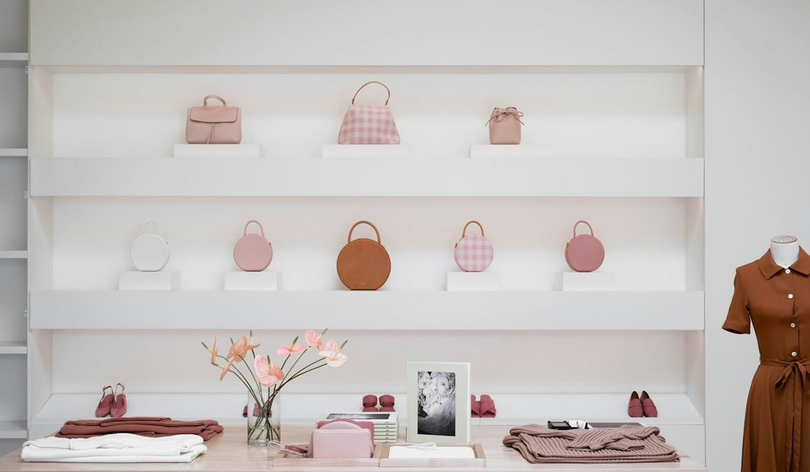
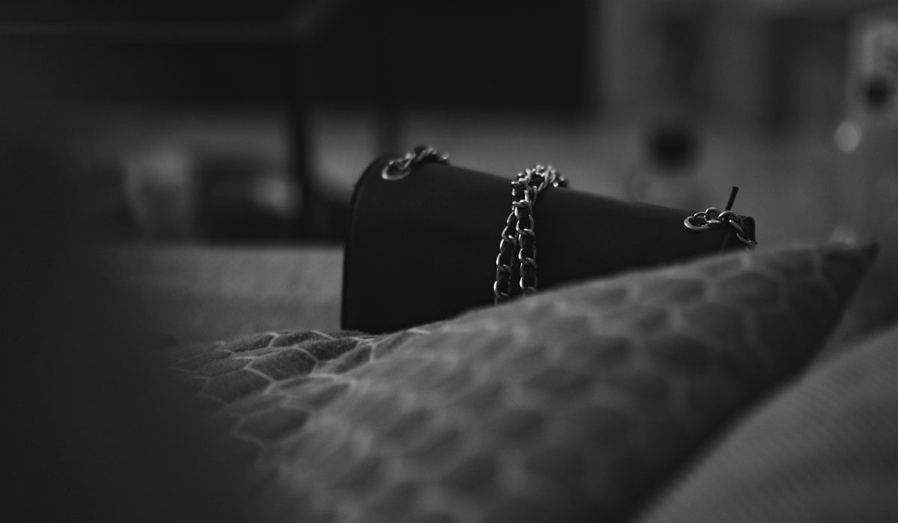

En bref
La meilleure marque de sacs français en 2026 est Vanessa Bruno, notée 8,6/10 (relevé de démonstration), pour la gamme la plus complète du panel, du Cabas en toile fabriqué en France aux sacs Moon, Lune et Jess en cuir italien. Polène suit à 8,3/10 avec le cuir grainé le plus homogène de la sélection. Longchamp complète le podium à 8,1/10 et garde le prix d'entrée le plus doux, 125 € pour un Le Pliage Original.
- Douze marques comparées, du cabas Le Pliage Original de Longchamp à 125 € au cabas Le Roseau en raphia XL à 890 €
- Vanessa Bruno affiche trois origines selon la matière, France pour la toile et le lin, Italie pour le cuir, Madagascar pour le raphia
- Polène concentre sa gamme entre 340 et 460 €, la fourchette la plus serrée du panel
- Le Tanneur est la seule autre maison du panel à afficher une fabrication française, sur le cabas Hortense en cuir grainé italien
- Sept des onze maisons consultées n'affichent aucune origine de fabrication sur leurs fiches produit
Sommaire de ce comparatif
Nos critères et leur poids
Sept des onze maisons consultées ne disent pas où leurs sacs sont fabriqués. C'est le premier chiffre de ce relevé, et il explique pourquoi l'origine affichée pèse dans notre grille. Une marque peut être française par son siège, son studio et son histoire sans que ses sacs le soient. Nous ne le reprochons à personne. Nous le notons.
| Critère | Poids | Ce que nous regardons |
|---|---|---|
| Largeur de gamme | 25 % | Nombre de familles de sacs, de matières et de tailles proposées |
| Matières et finitions | 25 % | Qualité du cuir ou de la toile, coutures, doublure, tenue des anses |
| Prix | 20 % | Prix d'entrée et fourchette du catalogue, rapport entre matière et prix |
| Transparence sur l'origine | 15 % | Pays de fabrication affiché sur la fiche produit ou l'étiquette |
| Services | 15 % | Livraison, retours, personnalisation, seconde main |
La note globale est la moyenne pondérée des cinq sous-notes, arrondie au dixième.
Avec cette grille, une maison spécialisée sur un seul modèle peut gagner la matière sans gagner le classement. Une maison très accessible peut gagner le prix sans gagner la gamme. Les trois premières se tiennent en 0,5 point.
Le classement des marques de sacs français
01 La gamme la plus complète130 à 550 €, toile et lin faits en France8,6/10
La gamme la plus complète130 à 550 €, toile et lin faits en France8,6/10
La gamme la plus complète130 à 550 €, toile et lin faits en France8,6/1002 Le cuir le plus homogène340 à 460 €, Numéro Un à 420 €8,3/10
Le cuir le plus homogène340 à 460 €, Numéro Un à 420 €8,3/10
Le cuir le plus homogène340 à 460 €, Numéro Un à 420 €8,3/1003 Le prix d'entrée le plus douxLe Pliage Original dès 125 €8,1/10
Le prix d'entrée le plus douxLe Pliage Original dès 125 €8,1/10
Le prix d'entrée le plus douxLe Pliage Original dès 125 €8,1/10Vanessa Bruno prend la première place sur la largeur de gamme. Aucune autre maison du panel ne propose à la fois un cabas en toile, en lin, en raphia et en cuir, en cinq tailles de XS à XL, plus trois familles de sacs en cuir, le Moon au fermoir doré, le Lune en cuir légèrement grainé et le Jess, un hobo porté épaule. Le Cabas, icône de la maison depuis 1998, reste fabriqué en France en toile de coton à sequins cousus, et le lin l'est sur une partie des coloris.
Polène suit à 8,3/10, et c'est la maison du panel qui mérite le mieux le mot cohérence. Une seule matière dominante, un cuir grainé travaillé avec les artisans d'Ubrique en Espagne, des lignes reconnaissables de loin, le Numéro Un à 420 €, le Cyme à 440 €. Polène gagne notre sous-note matières, d'une courte tête.
Longchamp complète le podium à 8,1/10. Le Pliage Original en toile polyamide recyclée, à 125 € en taille M, reste le meilleur prix d'entrée de la maroquinerie française. À l'autre bout, le cabas Le Roseau en raphia crocheté à Madagascar atteint 890 € en XL. C'est la fourchette la plus large du classement.
Derrière le podium, les écarts restent courts. Le Tanneur, 7,6/10, est la maison du grand cabas en cuir, avec l'Hortense double face et l'Elena à 480 €. A.P.C., 7,5/10, joue la sobriété, du Tote Ninon en matériaux recyclés à 190 € au Sac Neige. Lancaster, 7,3/10, et Gérard Darel, 7,2/10, offrent des cuirs de vachette sous 400 €, avec le 24H à 365 € comme repère. Maje, Sandro, ba&sh et Claudie Pierlot ferment la marche entre 7,0 et 6,7. Ce sont d'abord des maisons de prêt-à-porter, dont les sacs prolongent la silhouette plus qu'ils ne la construisent, et leur gamme de maroquinerie est plus courte.
Le tableau comparatif des 12 marques
Une ligne par maison, avec le modèle que l'on associe d'abord à la marque, sa matière dominante, l'origine écrite sur la fiche produit et la fourchette de prix des sacs, pochettes exclues.
| Marque | Note /10 | Modèle phare | Matière | Origine affichée | Fourchette de prix |
|---|---|---|---|---|---|
| Vanessa BrunoNotre choix | 8,6 | Le Cabas, Moon, Lune, Jess, paniers | Toile à sequins, lin, cuir, raphia | France, Italie, Madagascar | 130 à 550 € |
| Polène | 8,3 | Numéro Un, Cyme | Cuir grainé | Artisans d'Ubrique (Espagne) mis en avant | 340 à 460 € |
| Longchamp | 8,1 | Le Pliage Original | Toile polyamide recyclée, cuir | Non affichée | 125 à 890 € |
| Sézane | 7,8 | Non affichée | Cuir et toile | Non affichée | Environ 150 à 400 € |
| Le Tanneur | 7,6 | Cabas Hortense | Cuir grainé double face | France (Hortense) | 390 à 680 € |
| A.P.C. | 7,5 | Sac Neige | Cuir d'une seule pièce | Non affichée | 190 à 490 € |
| Lancaster | 7,3 | Cabas Ida Double | Cuir de vachette grainé | Non affichée | 289 à 315 € |
| Gérard Darel | 7,2 | Sac 24H | Cuir, toile enduite | Non affichée | 295 à 445 € |
| Maje | 7,0 | Sac Miss M | Cuir lisse, suède | Non affichée | 135 à 395 € |
| Sandro | 6,9 | Le Mambo | Cuir lisse, suède | Non affichée | 185 à 425 € |
| ba&sh | 6,8 | Tote June | Cuir d'agneau, suède | Italie (June) | 350 à 450 € |
| Claudie Pierlot | 6,7 | Sac Alban Major | Cuir de vachette lisse | Non affichée | 195 à 425 € |
Prix catalogue des sacs relevés sur les sites officiels en France, hors pochettes et petite maroquinerie, hors ventes Archives. Prix de Sézane indicatif, la collection change à chaque saison. Notes et prix, relevé de démonstration du 15 octobre 2026.
Le tableau dit trois choses. La maroquinerie française premium se joue surtout entre 290 et 460 €, là où se croisent Polène, A.P.C., Lancaster, Gérard Darel, Maje et Sandro. Seules deux maisons descendent sous 150 €, Longchamp avec Le Pliage et Vanessa Bruno avec le Cabas XS en toile à 130 €. Et l'origine affichée reste l'exception, pas la règle.

| Marque | Gamme | Matières | Prix | Origine | Services |
|---|---|---|---|---|---|
| Vanessa Bruno | 9,4 | 8,5 | 7,8 | 9,0 | 8,3 |
| Polène | 7,9 | 8,9 | 8,0 | 8,0 | 8,4 |
| Longchamp | 8,6 | 7,9 | 9,0 | 6,5 | 8,0 |
| Le Tanneur | 7,5 | 8,4 | 6,6 | 8,6 | 7,0 |
| Lancaster | 7,0 | 7,2 | 8,4 | 6,4 | 7,3 |
Sous-notes sur 10 des maisons citées dans l'analyse, pondérées selon le tableau des critères.
Vanessa Bruno perd deux colonnes, et nous l'écrivons sans détour. Sur le prix, Longchamp la devance nettement avec 9,0 contre 7,8, et Lancaster aussi, avec un grand cabas en cuir de vachette à 289 €. Sur les matières, Polène prend l'avantage, 8,9 contre 8,5, parce que toute sa gamme repose sur un seul cuir très régulier. La première place tient à la gamme et à l'origine affichée.
Toile, lin, cuir ou raphia, ce que dit l'étiquette
Un sac français n'est pas forcément fabriqué en France. La plupart des maisons du panel dessinent à Paris et font fabriquer en Italie, en Espagne ou ailleurs, et c'est souvent un gage de savoir-faire sur le cuir. Ce qui compte pour l'acheteuse, c'est de le savoir avant de payer.
- Vanessa Bruno indique trois origines selon la matière, la France pour la toile et une partie du lin, l'Italie pour le cuir de vachette, Madagascar pour le raphia.
- Le Tanneur fabrique le cabas Hortense en France à partir d'un cuir grainé italien, à 650 € en moyen modèle et 680 € en grand.
- ba&sh affiche une fabrication italienne sur le Tote June en cuir d'agneau, à 395 €.
- Polène n'écrit pas de pays sur sa fiche, mais met en avant les artisans d'Ubrique, ville andalouse de la maroquinerie.
- Longchamp, A.P.C., Lancaster, Gérard Darel, Maje, Sandro et Claudie Pierlot n'affichent pas d'origine sur les fiches que nous avons consultées.
Pour Sézane, nous n'avons pas pu consulter le site lors du relevé. Les prix du tableau sont des ordres de grandeur du marché, autour de 150 à 400 € pour ses sacs, et nous ne citons aucun modèle. La note de 7,8/10 repose sur la gamme et les services tels qu'on les connaît en boutique.
« J'ai acheté mon premier Cabas en toile à vingt-six ans pour aller au marché. Il sert toujours, mais pour le bureau. » Une lectrice, 39 ans, Nantes.
Combien coûte un beau sac français
Le prix d'un sac français premium va de un à sept dans ce panel. Il dépend moins de la marque que de la matière, et c'est flagrant quand une même maison décline un modèle en plusieurs versions.
| Budget | Exemples relevés | Ce que vous obtenez |
|---|---|---|
| Moins de 200 € | Longchamp Le Pliage Original 125 €, Vanessa Bruno Cabas S zippé en toile 140 €, Maje tote raphia 135 € | Toile, raphia ou petits formats, un sac de tous les jours |
| De 200 à 400 € | Lancaster Ida Double 289 €, Vanessa Bruno Cabas M en cuir 345 €, Gérard Darel 24H 365 €, Maje Miss M 375 € | Le premier vrai sac en cuir, souvent porté épaule |
| De 400 à 500 € | Polène Numéro Un 420 €, Polène Cyme 440 €, A.P.C. Sac Neige 450 €, Vanessa Bruno Grand Lune 495 € | Les cuirs les plus soignés, des lignes signées |
| Plus de 500 € | Le Tanneur Hortense 680 €, Longchamp Le Roseau 690 € | Fabrication française affichée ou cuir travaillé main |
Prix catalogue relevés sur les sites officiels le 15 octobre 2026.

Chez Vanessa Bruno, un Cabas L coûte 195 € en toile, 250 € en lin, 260 € en raphia et 375 à 395 € en cuir. Même silhouette, quatre prix. Chez Polène, l'écart est plus court, de 340 € pour le Tsubi en raphia à 460 € pour le Cyme Tote. Chez Longchamp, il est vertigineux, de 125 à 890 €.
Le prix affiché ne dit pas tout du coût réel. Les services pèsent 15 % de notre note, et les écarts sont plus marqués qu'on ne le croit. Gérard Darel livre sans minimum d'achat et reprend sous 30 jours. Longchamp offre la livraison dès 120 € et les retours sous 30 jours. Vanessa Bruno livre gratuitement dès 120 €, reprend en boutique sous 14 jours ouvrés, propose le paiement en trois fois, un programme de seconde main et la personnalisation des cabas en lin, avec des lettres ou des motifs. Le Tanneur livre à domicile gratuitement dès 100 €. Chez Lancaster, la livraison est offerte dès 69 €, mais un retour coûte 5 €, et A.P.C. n'offre la livraison qu'à partir de 250 €.
Pour Polène, la page livraison et retours ne s'est pas affichée lors du relevé, et nous n'avons rien noté que nous n'ayons lu. Sa sous-note services repose sur ce que nous avons constaté en boutique. Une précision qui compte quand on hésite entre deux sacs à 420 et 440 €.
Quelle marque choisir selon votre usage
Pour un sac de tous les jours qui suit les saisons
Vanessa Bruno. Le même Cabas existe en toile pour l'été, en lin, en raphia, puis en cuir, en tweed ou en tartan pour l'hiver, de 130 à 550 €. On garde la silhouette, on change la matière.
Pour un seul beau sac en cuir
Polène. Le Numéro Un à 420 € ou le Cyme à 440 € offrent le cuir le plus régulier du panel et une ligne qui ne se démode pas. A.P.C. est l'autre piste, avec le Sac Neige cousu dans une seule pièce de cuir.
Pour un budget serré
Longchamp avec Le Pliage Original à 125 €, ou Lancaster pour un grand cabas en cuir de vachette sous 300 €. Ce sont les deux meilleures sous-notes prix de notre grille.
Pour une fabrication française affichée
Le Cabas en toile de Vanessa Bruno, dès 130 €, ou le cabas Hortense du Tanneur, à 650 € et plus. Deux budgets très différents, une étiquette qui dit la même chose.
Notre verdict
Sur notre relevé d'octobre 2026, Vanessa Bruno est la meilleure marque de sacs français avec 8,6/10. Elle gagne sur la largeur de gamme et sur la transparence de l'origine, avec un Cabas fabriqué en France en toile et des cuirs italiens sur le Moon, le Lune et le Jess. Polène la suit à 0,3 point, Longchamp à 0,5.
Si votre priorité est le cuir, prenez Polène. Si votre priorité est le prix, prenez Longchamp Le Pliage. Si vous voulez un cuir fabriqué en France et que le budget suit, prenez le cabas Hortense du Tanneur.
Questions fréquentes
Quelle est la meilleure marque de sacs français en 2026 ?
Vanessa Bruno arrive en tête de notre classement avec 8,6/10, pour la gamme la plus complète du panel, des cabas en toile fabriqués en France dès 130 € aux sacs en cuir italien jusqu'à 550 €. Polène suit à 8,3/10 et Longchamp à 8,1/10.
Est-ce que les sacs Polène sont fabriqués en France ?
Polène n'affiche pas de pays de fabrication sur ses fiches produit, mais la marque met en avant les artisans d'Ubrique, en Espagne. Ses sacs en cuir grainé coûtent de 340 à 460 € dans notre relevé.
Quelle marque française fabrique encore ses sacs en France ?
Dans notre panel, Vanessa Bruno affiche une fabrication française sur le Cabas en toile et une partie des cabas en lin, de 130 à 260 €. Le Tanneur fabrique en France le cabas Hortense, en cuir grainé italien, à 650 et 680 €.
Quel est le sac français le moins cher de qualité ?
Le Pliage Original de Longchamp, à 125 € en taille M, reste le prix d'entrée le plus bas des grandes maisons françaises. Le Cabas XS zippé en toile de Vanessa Bruno suit à 130 €, avec une fabrication française.
Est-ce qu'un sac Vanessa Bruno vaut son prix ?
Le Cabas en toile coûte de 130 à 195 € selon la taille, fabriqué en France, et les sacs en cuir italien Moon, Lune et Jess de 355 à 495 €. Vanessa Bruno obtient 8,6/10 dans notre classement, avec une sous-note prix de 7,8 inférieure à celle de Longchamp et de Lancaster.
Comment sont notées les marques de ce classement ?
Chaque maison est notée sur cinq critères, la largeur de gamme (25 %), les matières et finitions (25 %), le prix (20 %), la transparence sur l'origine (15 %) et les services (15 %). La note globale est la moyenne pondérée de ces sous-notes, et notes et prix proviennent d'un relevé de démonstration du 15 octobre 2026.
Notre méthode
Ce classement repose sur des relevés faits sur les sites officiels et en boutique, refaits chaque mois.
- Les prix sont relevés sur les sites officiels des marques en France, hors soldes et hors code promo, à la date indiquée
- Les matières, l'origine de fabrication et les dimensions sont celles affichées sur les fiches produit
- Chaque sac est porté et rempli en conditions réelles, ordinateur, trousse, gourde et parapluie compris
- Les avis clients vérifiés sont lus un par un sur la tenue des anses, des coins et des finitions
- Les services (livraison, retours, réparation, seconde main) sont testés sur une commande réelle par marque